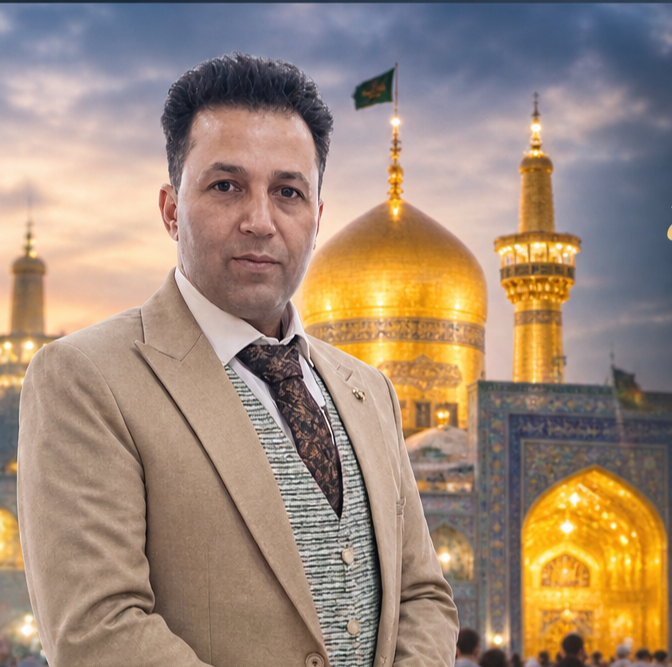

استقبال ووصول
تنسيق الاستقبال من مطار مشهد والمساعدة على بدء الرحلة براحة.

مشهد المقدسة · إيران
السلام عليكم، أنا حسين
أستقبلك كضيف، وأرافقك في تفاصيل رحلتك إلى مشهد؛ من لحظة الوصول، إلى الزيارة والعودة بسلام.
أعرف أن السفر إلى مدينة جديدة قد يثير أسئلة كثيرة. لذلك أؤمن أن أجمل ما في الرحلة ليس المكان وحده، بل أن تجد من يستقبلك باحترام، ويساعدك على الشعور بالراحة من أول لحظة.
هدفي أن تكون زيارتك إلى مشهد أسهل، وأهدأ، وأقرب إلى ما تتمناه.
كل رحلة لها تفاصيلها. نتحدث أولاً عن احتياجاتك، ثم ننسّق ما يناسب برنامجك وإمكانياتك.
تنسيق الاستقبال من مطار مشهد والمساعدة على بدء الرحلة براحة.
المساعدة في ترتيب خيارات الإقامة والتنقل بحسب احتياجاتك.
وقت للزيارة، والتعرّف على الأماكن الدينية والمعالم المناسبة في مشهد.
مساعدة في تنسيق تفاصيل الرحلة، بما في ذلك التوديع في المطار عند الاتفاق.
تُحدّد تفاصيل كل خدمة ومدى توفرها بالتواصل المسبق، حتى تكون التوقعات واضحة من البداية.
ليست زيارة عابرة؛ إنها لحظات من السكينة والذكرى. شاهد مشهد كما نحب أن نستقبل ضيوفنا فيها.
هذه معاينات تصميمية؛ تُستبدل بمقاطع حقيقية بعد إضافة ملفات الفيديو الخاصة بحسين.
وإن احتجت إلى الرعاية الصحية...
إذا كانت زيارتك إلى مشهد تتضمن مراجعة طبية، يمكنني مساعدتك في الاستفسار عن الخيارات المتاحة وتنسيق التواصل والمواعيد بحسب احتياجك.
التنسيق لا يُعدّ تشخيصاً أو استشارة طبية، وتُحدّد الخدمات والمواعيد بعد التحقق من توفرها.
أخبرني بما تحتاجه ↙دليل الزائر العربي
من زيارة حرم الإمام الرضا والإقامة القريبة، إلى التنقل وبرنامج الرحلة ونصائح السفر للعائلات.
دليل الزائر العربي
أدلة عملية عن زيارة الحرم، والإقامة القريبة، والوصول من المطار، وتكلفة الرحلة وبرامج الزيارة؛ حتى تبدأ من السؤال الذي يشغلك فعلاً.
أرسل لي رسالة، أخبرني بموعد رحلتك وما تحتاج إليه، وسنتحدث عن التفاصيل بهدوء ووضوح.
تواصل معي عبر واتساب ↙يلزم إضافة رقم واتساب الصحيح قبل نشر الموقع.أنتم ضيوفي...
قبل أن تكونوا عملائي.